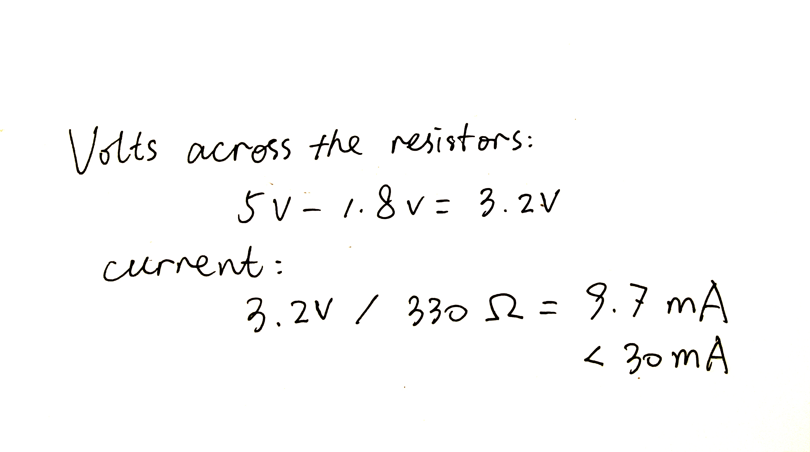
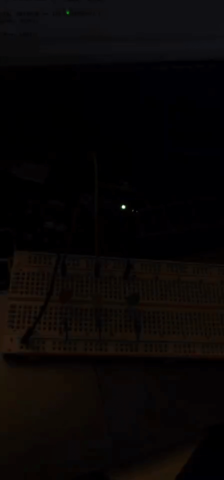

Joseph Zhang's Assignment 1!

The above is the calculation process of choosing resistors. I chose 330Ω resistors for those LEDs,
so that the current would not be larger than 30mA.

Here are the schematics of the circuit! I connected the electricity source to LEDs,
then to the resistors, then to the ground.

Here is the Blink GIF!
If you want to learn about how I made this by Arduino, please find the code below!